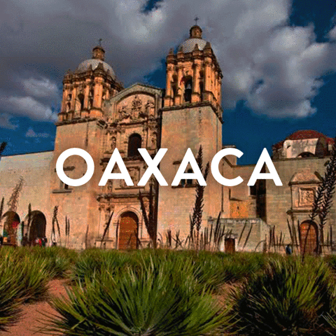

Tradición, Historia y Sabor en el Corazón de México
| Concepto: | |
|---|---|
| La Cultura de Oaxaca es un reflejo de la rica diversidad étnica y cultural de la región. Las festividades y tradiciones oaxaqueñas son un testimonio de su patrimonio cultural, donde la fusión de tradiciones indígenas y españolas ha dado lugar a una identidad única. Las celebraciones como la Guelaguetza y el Día de los Muertos son ejemplos destacados de cómo Oaxaca conserva y promueve su herencia cultural. La gastronomía, el arte y la artesanía son aspectos fundamentales de la cultura oaxaqueña, cada uno con su propio estilo y significado. |  |